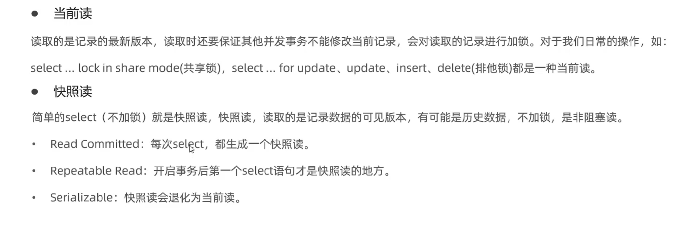
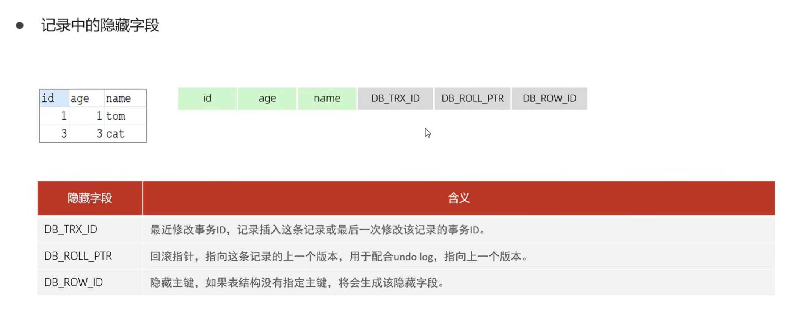
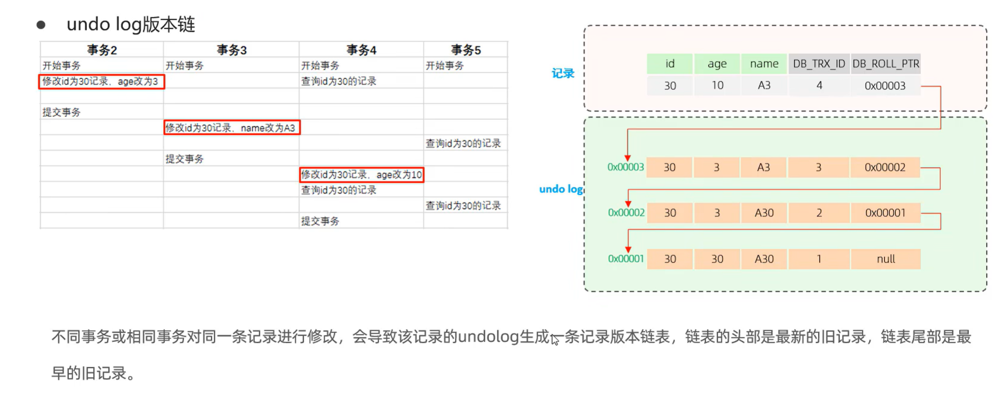
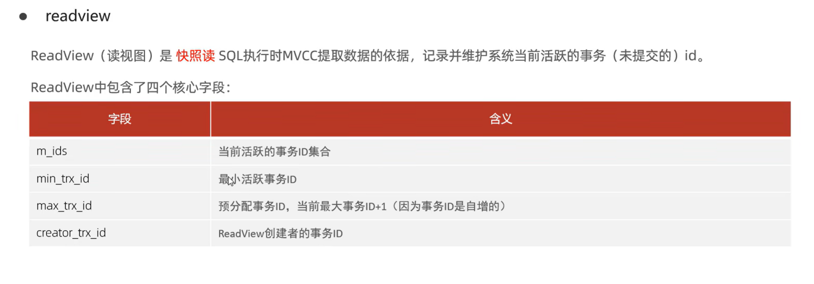
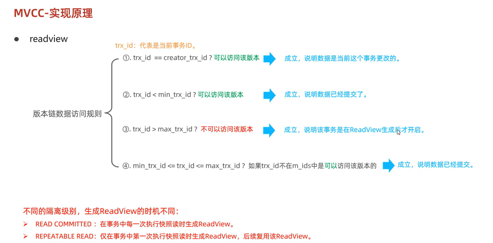
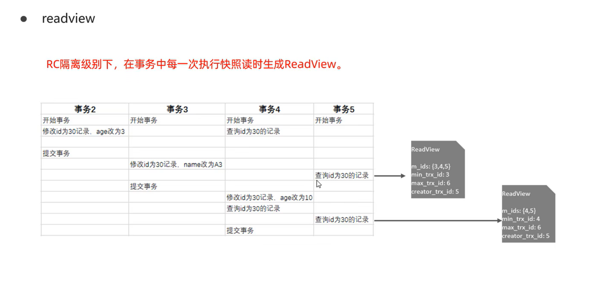
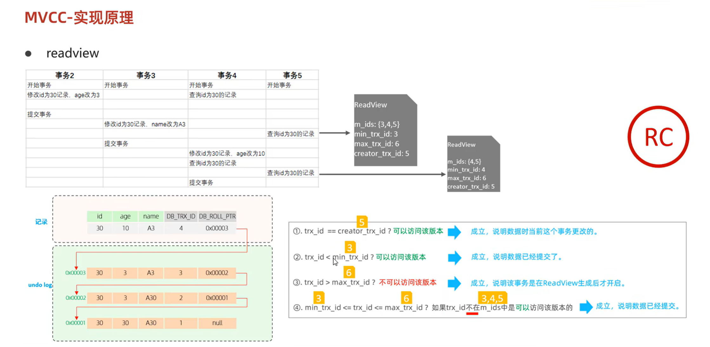
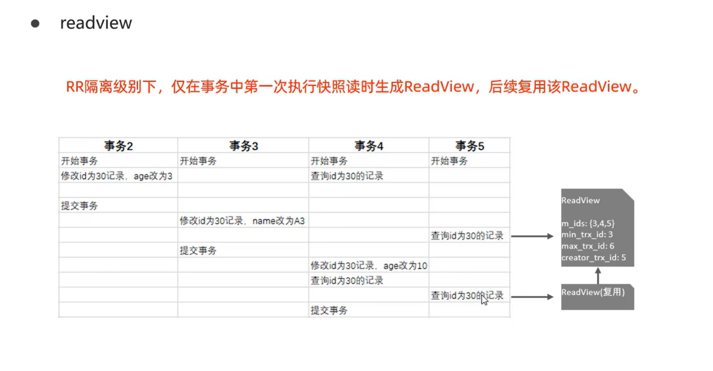
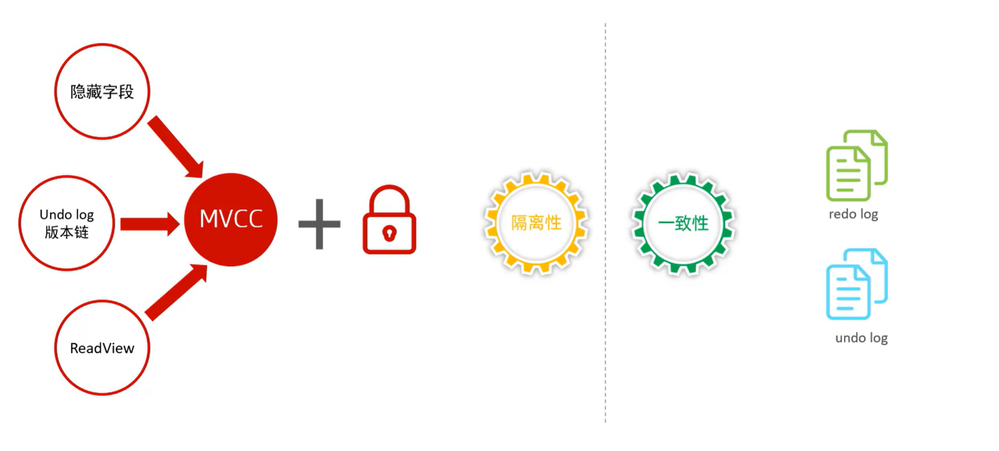
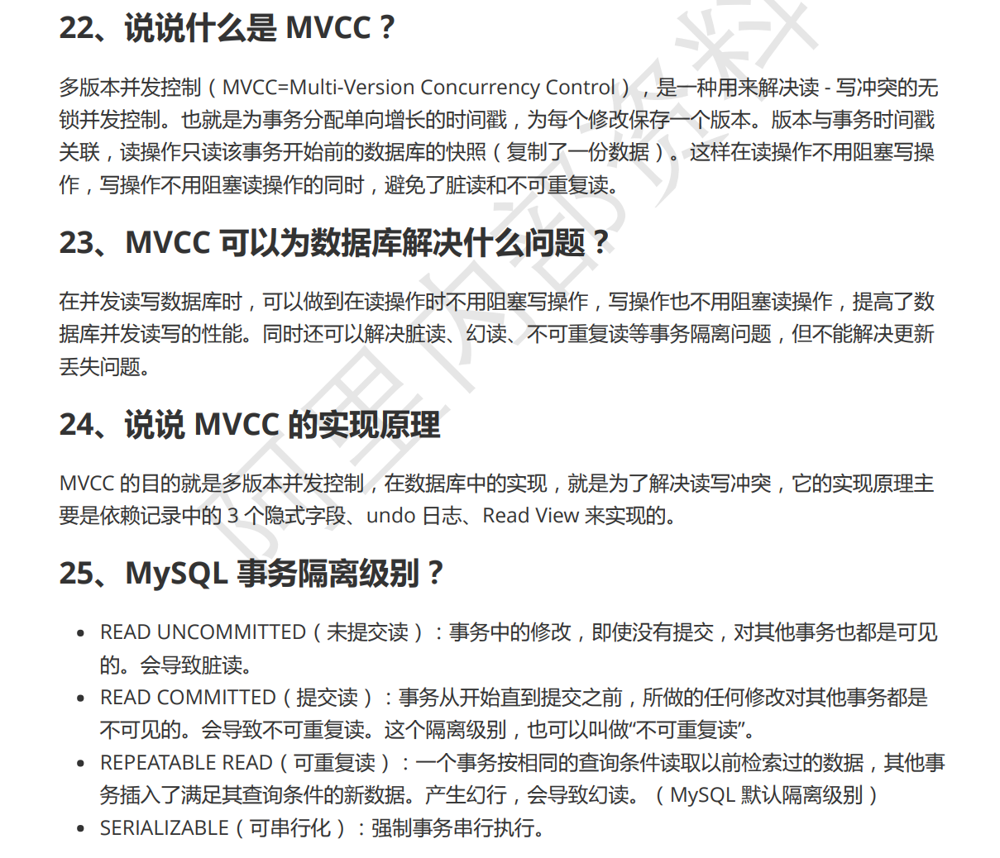

MySQL：（四）事务隔离级别和MVCC
前言
MVCC是面试重灾区，网上的内容我发现并不全面，只有生搬硬套下来的原理却不解释过程，让我看的云里雾里。我写这篇MVCC的内容目的是能更好了理解MVCC如何实现，结合一些八股的内容和实际的案例进行介绍，全程干货。
一、什么是MVCC
多版本并发控制（MVCC=Multi-Version Concurrency Control），是一种用来解决读 - 写冲突的无锁并发控制。也就是为事务分配单向增长的时间戳，为每个修改保存一个版本。版本与事务时间戳关联，读操作只读该事务开始前的数据库的快照（复制了一份数据）。mvcc解决的就是读写时的线程安全问题，线程不用去争抢读写锁（读写锁可参考：Java多线程：三、多线程锁、java锁的实现 | 颓废市民黄先生 (rengoku.top)）。
说到读写冲突和多线程并发控制，肯定也会涉及事务的隔离级别，即读未提交（可能脏读），读已提交（不可重复读），可重复读（可能幻读）。
MVCC所提到的读是快照读，也就是普通的select语句。快照读在读写时不用加锁，不过可能会读到历史数据。
还有一种读取数据的方式是当前读，是一种悲观锁的操作。它会对当前读取的数据进行加锁，所以读到的数据都是最新的。主要包括以下几种操作：
select lock in share mode（共享锁）
select for update（排他锁）
update（排他锁）
insert（排他锁）
delete（排他锁）
什么是快照读和当前读？
快照读：快照读是指在读取数据时，读取的是某个Readview中的数据，这个一致性视图反映了事务开始时刻数据库的快照。
当前读：当前读，是指读取操作获取的是数据的最新版本，即读取操作发生时数据库中该数据的实际状态。这种读取方式通常伴随着锁的使用，以确保读取的数据在事务处理期间不会被其他事务修改，从而保证事务的一致性和隔离性。

MVCC在MySQL的InnoDB引擎是默认实现的，无需配置其他内容。
二、MVCC实现原理
MVCC 的目的就是多版本并发控制，在数据库中的实现，就是为了解决读写冲突，它的实现原理主要是依赖记录中的版本链、undo 日志、Read View 来实现的。
1. 隐藏字段

在MySQL中，除了我们显示的定义列，存储引擎还会隐式帮我们定义一些列，分别是trx_id，roll_pointer，row_id:
trx_id：
在MySQL的InnoDB存储引擎中，trx_id是一个隐藏列，用于记录对该行数据最后一次进行修改（INSERT、UPDATE或DELETE）的事务的ID。当需要一个新的trx_id时，InnoDB会获取max_trx_id的当前值，然后将其加1，并将结果赋值给新的或修改的数据行的trx_id隐藏列。
roll_pointer：
回滚指针，用于找到上一个版本的数据，结合undolog进行回滚。
row_id:
当表没有主键时，innodb会隐式的增加row_id字段作为主键，如果表中存在主键则没有这个字段
2. undo log版本链

3. read view

4. 八股：read view判断规则

这里是理解的重点，我举个例子：
假设有两个事务，事务A和事务B，它们同时操作同一张表中的数据。事务A的ID为100，事务B的ID为101。事务A在开始时执行了一个SELECT操作，想要读取某条数据；而事务B则在该数据上执行了UPDATE操作，但尚未提交。
4.1 Read View的创建
- 事务A的Read View创建
- 当事务A执行SELECT操作时，InnoDB会为事务A创建一个Read View（普通的select是快照读）。这个Read View中包含了当前系统中所有活跃的事务ID（即已经开启但尚未提交的事务ID）。在这个例子中，Read View将包含事务A（ID=100）和事务B（ID=101）的ID，因为事务B此时是活跃的。
- Read View还包含以下关键字段：
m_ids：包含活跃事务的ID列表，如[100, 101]。min_trx_id：m_ids中的最小事务ID，即100。max_trx_id：系统应该分配给下一个事务的ID值，这个值通常基于当前最大事务ID加1计算得出，但在这个场景中我们主要关注m_ids和min_trx_id。creator_trx_id：创建Read View的事务ID，即100。
- 数据可见性判断
- 当事务A尝试读取某条数据时，InnoDB会检查该数据的各个版本。每个版本都会有一个
trx_id，表示修改该版本的事务ID。 - 如果某个版本的
trx_id与creator_trx_id相同（即事务A自己修改的），则该版本对事务A可见。 - 如果某个版本的
trx_id小于min_trx_id（即该版本在事务A的Read View创建之前已经提交），则该版本对事务A可见。 - 如果某个版本的
trx_id大于或等于Read View中最大的活跃事务ID（在这个例子中我们没有直接使用max_trx_id作为判断条件，因为它通常用于确定新事务的ID），则该版本对事务A不可见，因为它是在事务A的Read View创建之后生成的。 - 如果某个版本的
trx_id在min_trx_id和m_ids中的最大事务ID之间，则需要进一步检查该trx_id是否在m_ids列表中。如果在，说明该版本是在事务A的Read View创建时活跃的，因此不可见；如果不在，说明该版本在事务A的Read View创建前已经提交，因此可见。
- 当事务A尝试读取某条数据时，InnoDB会检查该数据的各个版本。每个版本都会有一个
4.2 例子中的操作
- 假设事务B修改了数据但尚未提交，因此数据的最新版本（由事务B修改）对事务A不可见。
- 事务A将根据Read View中的规则，找到并读取事务B修改之前的旧版本数据（如果存在的话）。
4.3 为什么是事务A创建read view？
因为事务A做的select操作是快照读，做快照读就会生成read view。在开头提到的一些操作是当前读。
4.4 read view这个模式是针对同一条数据的吗？
不是，他是对所有事务进行的快照，只不过是因为我做修改操作的时候需要判断之前的版本哪个是我进行修改操作的时候读取到的版本，所以我针对的是同一条数据进行分析。再演示一个例子：
- 事务 A 开始，执行第一次 SELECT 查询，创建 Read View A。
- 事务 B 开始，执行第一次 SELECT 查询，创建 Read View B。
- 事务 A 对表 T 中的记录 R1进行UPDATE操作，但未提交。
- 事务 C 开始，执行UPDATE操作，修改表 T 中的记录 R2 ，但未提交。
- 事务 B 尝试读取记录 R1，使用 Read View B 进行可见性判断。由于事务 A和事务 C 的修改尚未提交，因此事务 B 看不到事务 A 和事务 C 的修改，它可能看到的是记录 R 和记录 R2 的旧版本。
- 事务 A 提交修改，同时事务 C 也进行提交修改。
- 如果事务 B 之后再次执行 SELECT 查询（在 Read Committed 隔离级别下），它将创建一个新的 Read View，此时能够看到事务 A 和事务 C 已经提交的修改。如果此时是对记录 R 进行SELECT操作，那么就读取到的是事务 B 提交的最新版本，如果此时是对记录 R2 进行SELECT操作，那么就读取到的是事务 C 提交的最新版本，取决于SELECT 查询是对哪条记录。
- 事务 B 提交。
强调RC的隔离级别是因为RC和RR下，使用readview的可能会不一样，在下一节我会写得很详细。
总结：在这个例子中，事务B生成了两次readview，不同的是事务 B 前后两次快照对记录 R 和记录 R2 读取的版本不同。
4.5 trx_id是哪条数据？
trx_id是在read view中的任何一条事务id，使用trx_id来套用规则。在下一节来讲得更详细一些。
三、事务隔离级别与MVCC
1. RC与MVCC
在RC(read commited)的隔离级别下，每一次进行快照读都会生成一个read view。

我从刚刚的那个undo log版本链中来进行分析，如果事务5第一次进行select操作到底读取到的是哪个版本：

对于事务5，事务5进行了select操作，所以进行快照读，生成一次read view。从版本链的最上游开始，trx_id=4，来判断事务5读取到的是哪个版本。
我们从判断规则入手：此时trx_id=4的情况下，四个条件如下：
- trx_id不等于5
- trx_id不小于3
- trx_id不大于6
- trx_id在3,4,5这个集合内
可以看到，事务4（trx_id=4）时，所有判断都不成立，所以事务5不会读取到事务4的版本。
以此类推，可以发现trx_id=2的时候，满足第二个条件：trx_id=2<min_trx_id=3。事务5进行select操作的时候会读取到trx_id=2的版本，也就是id=30,age=3,name=A30,trx_id=2,roll_point=0X00001这条记录。
同样的写法，事务5第二次进行快照读的时候，应该读取到的是事务3的版本，因为事务5打快照的时候，事务3已经提交了。也就是id=30,age=3,name=A3,trx_id=3,roll_point=0X00002这条记录。
看到这里，是不是更好的理解RC了呢？确实和RC名字一样，真的就是读已提交啊。这也就是RC的实现原理啦。
2. RR与MVCC
在RR（repeatable read）的事务隔离级别下，仅在事务中第一次执行快照读的时候生成一次read view，后续会复用这个read view。

这里套用的判断规则和RC是一样的。RR既然叫可重复读，那肯定是套用了一样的read view啊！豁然开朗啊简直是
最后我们再看看mvcc这些内容保证ACID的什么部分：

通过整篇的介绍，我们也可以看出，事务隔离级别和底层的MVCC加上锁实现保证隔离性；两个日志文件：redo log的保证事务持久性和undo log回滚事务来保证数据一致性。
两个日志文件我在这里有介绍：MySQL：（二）存储引擎 | 颓废市民黄先生 (rengoku.top)
3. RU如何实现的？
在上边两节内容中，我讲了事务隔离级别主要通过底层MVCC进行实现的，现在没讲的事务隔离级别除了序列化，就只剩RU（Read Uncommited）了，这一节简单的附上一些资料。
在RU级别中，事务读到的所有数据都是最新的数据，可能是事务提交后的数据，也可能是事务执行中的数据（可能会被回滚）。
3.1 锁机制
- 不加锁或轻量级锁：在RU隔离级别下，数据库系统可能不会对读取的数据加锁，或者只加非常轻量级的锁，以允许其他事务同时读取和写入数据。这意味着，一个事务在读取数据时，可能看到其他事务尚未提交的数据变更。
- 写锁：尽管读取时可能不加锁，但写入数据时通常需要加行级锁，以防止数据在写入过程中被其他事务修改，从而保证数据的一致性。然而，在RU级别下，写锁的存在并不影响读取到未提交数据的能力。
3.2 并发控制
多版本并发控制（MVCC）的缺失：在读未提交隔离级别下，数据库系统可能不会对数据进行多版本控制（MVCC），或者即使支持MVCC，也可能不会利用它来提供隔离性。相反，事务可以直接访问当前数据库的最新状态，包括其他事务尚未提交的数据。
直接访问最新数据：事务在RU级别下直接访问数据库中的最新数据版本，而不管这些数据是否已经被其他事务提交。这可能导致脏读（Dirty Reads）的发生，即读取到其他事务未提交的数据。
事务视图：每个事务在开始时可能会创建一个事务视图，但这个视图在读未提交隔离级别下不会限制对其他事务未提交数据的访问。事务可以自由地读取和看到其他事务正在进行的更改，无论这些更改是否已被提交。
简单的说，RU的实现只是加了轻量锁，这种隔离级别是一种用数据隔离性替换性能的隔离方式。
四、八股部分
最后放部分八股的题目：

关于24题中3个隐式字段，除了trx_id和roll_pointer，还有一个是row_id，在这里整理一下：
row_id
这是一个唯一的标识符，用于唯一标识一条行记录。当表没有显式定义主键或唯一索引时，InnoDB会使用row_id作为主键。
trx_id
事务ID，记录的是当前行记录是被哪个事务修改提交的。InnoDB会为每个开启的事务分配一个递增的ID，用于唯一标识一个事务。当某个事务修改了某个行记录时，就会在这个行记录的trx_id隐式字段中记录当前事务的ID。
roll_pointer
回滚指针，用于指向undo日志中该行记录的历史版本。当一个事务对某条记录进行修改时，会把该行记录先拷贝到undo日志中作为一个历史版本，然后再对该行记录进行修改，并使用roll_pointer指针指向undo日志中该行记录的历史版本。
24题中使用undo日志的体现：
- 构成版本链：每次对记录修改时会写入undo日志，而回滚指针将这些记录构成一条链表，供回滚指针进行回滚
- 实现多线程并发控制：记录未提交事务内容，可以作为其他事务的参考进行快照读
总结
MVCC是多版本并发控制，在MySQL的InnoDB引擎中是默认实现的。MVCC和事务隔离级别共同管理事务，尽可能的避免脏读、幻读的问题。
MVCC通过三个隐式字段（row_id、trx_id、roll_pointer）、版本链、undo日志、read view视图实现事务隔离。
顺便把锁的博客放一篇：MySQL：（三）全局锁、表级锁、行级锁 | 颓废市民黄先生 (rengoku.top)